PC Engine
20 juegos, 0 probados en la bartop
Género
Jugadores
Década
20 juegos
 Akumajou Dracula X - Chi no Rondo
Akumajou Dracula X - Chi no Rondo Alien Crush
Alien Crush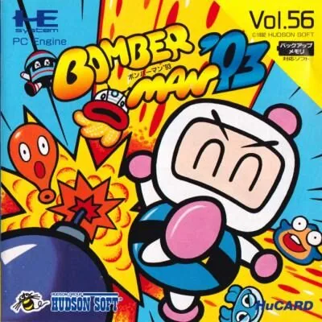
Bomberman '93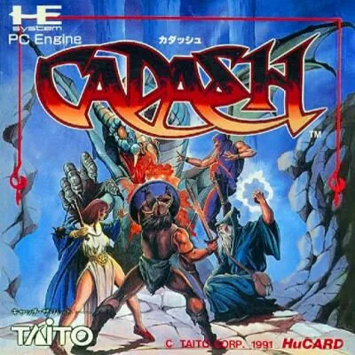
Cadash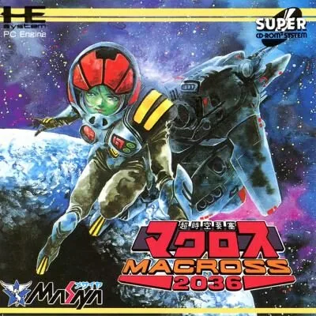
Chou Jikuu Yousai Macross 2036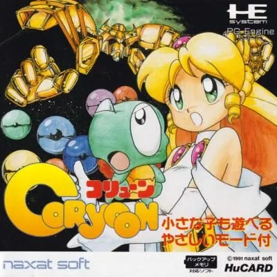
Coryoon - Child of Dragon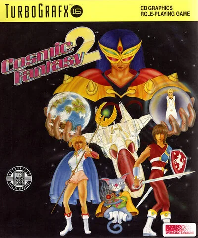
Cosmic Fantasy II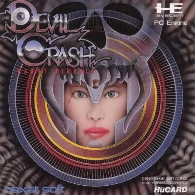
Devil's Crush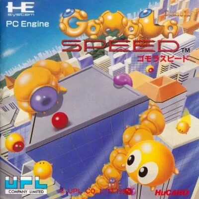
Gomola Speed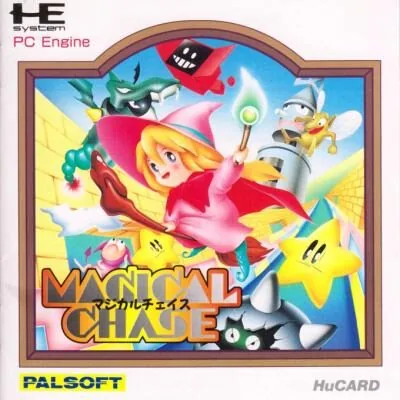
Magical Chase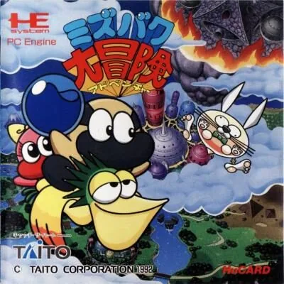
Mizubaku Dai Bouken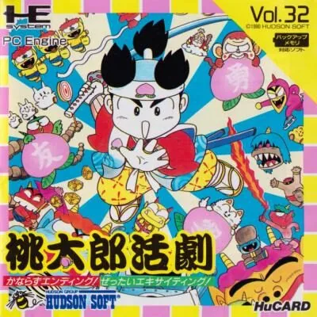
Momotarou Katsugeki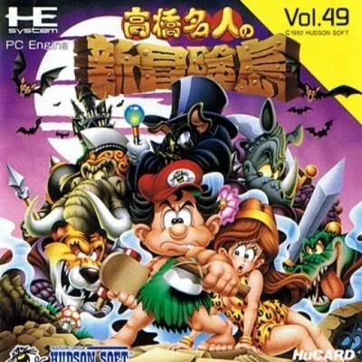
New Adventure Island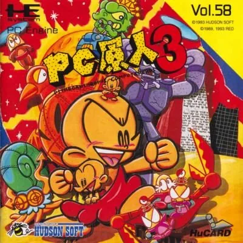
PC Genjin 3 - Pithecanthropus Computerurus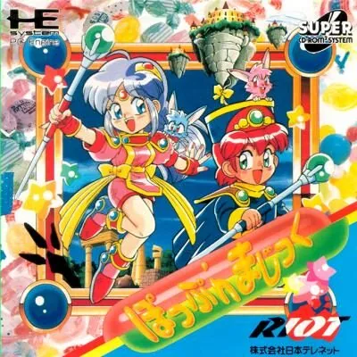
Pop'n Magic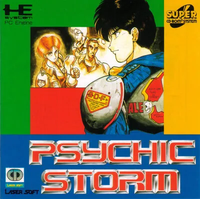
Psychic Storm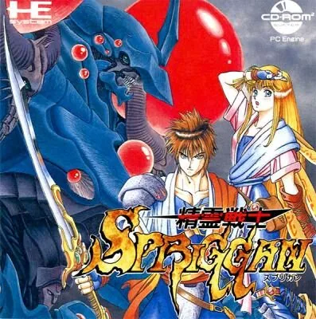
Seirei Senshi Spriggan Soldier Blade
Soldier Blade Splatterhouse
Splatterhouse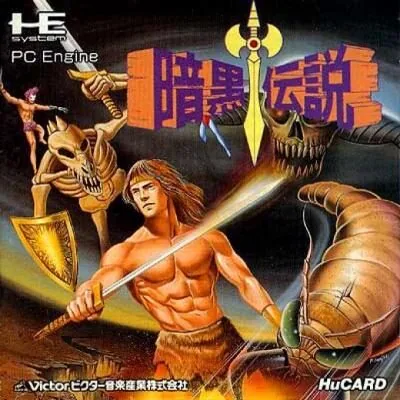
The Legendary Axe II
No hay juegos con esos filtros.